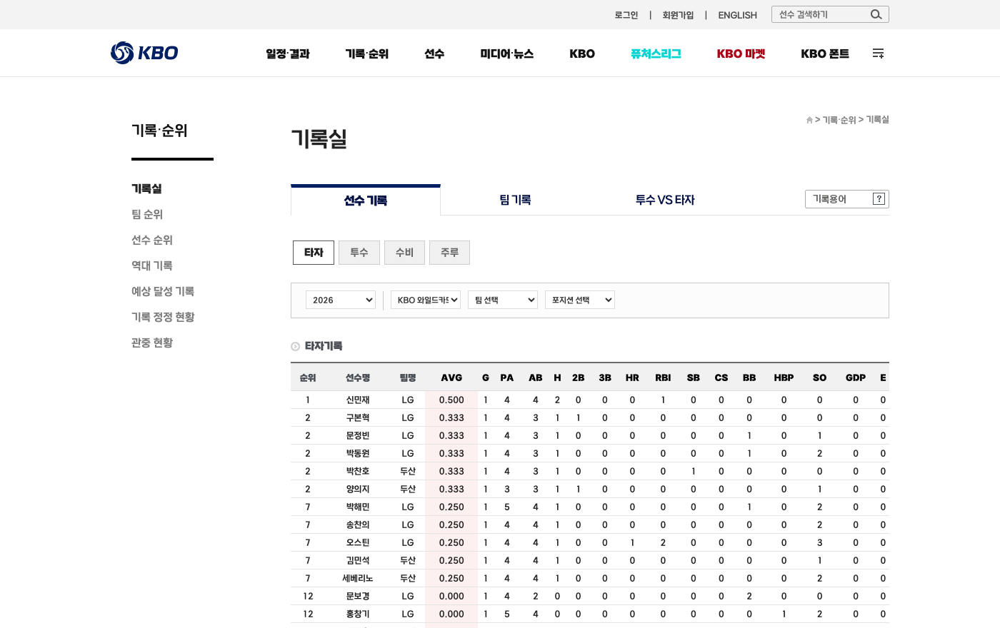
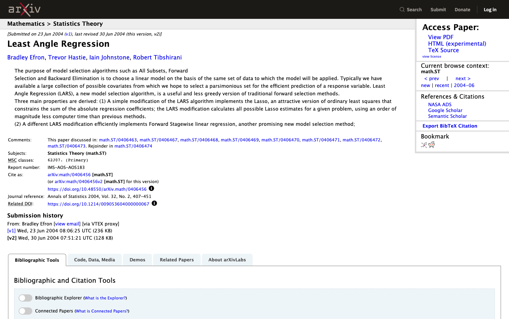
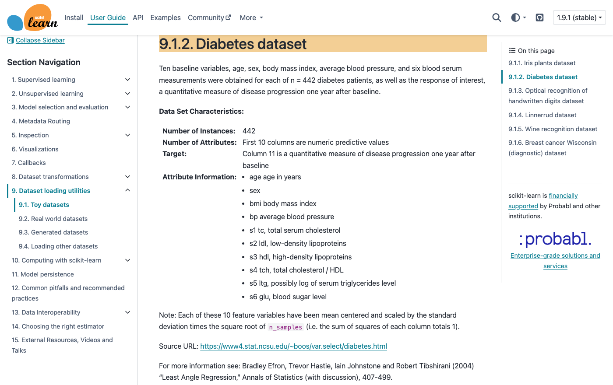
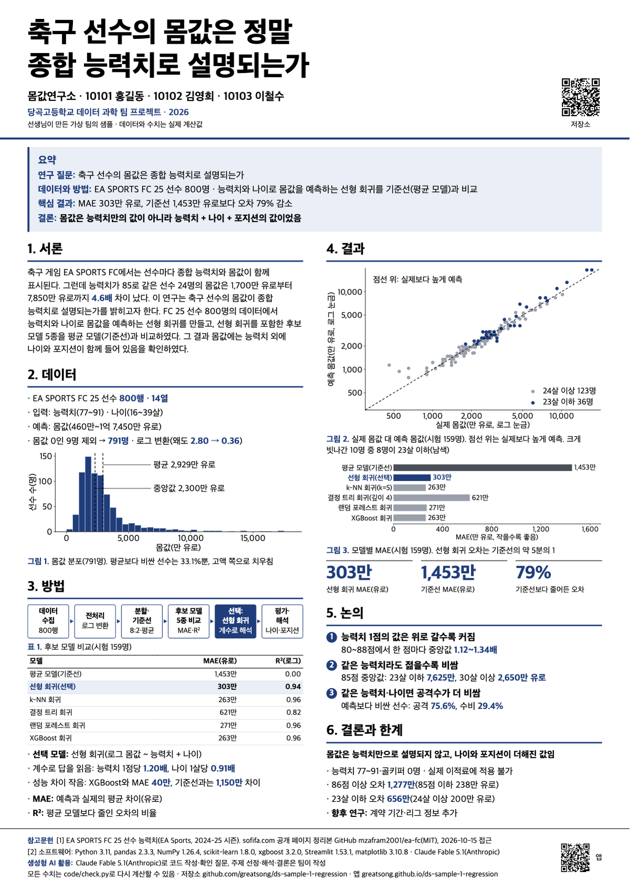
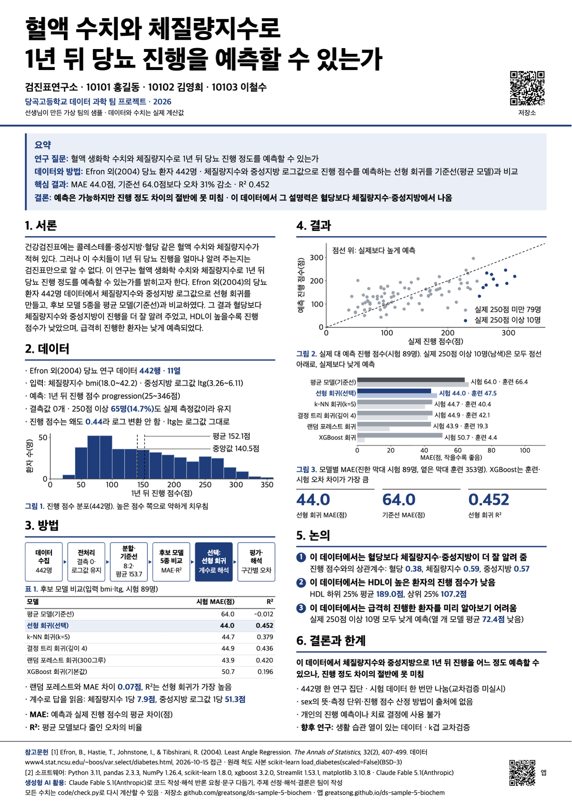

TEAM PROJECT · 5주 15차시
데이터 과학
기말 팀 프로젝트
2
이렇게 씁니다: 스포츠·생명과학 두 사례
샘플 1 몸값연구소 실제 산출물
한 문장으로
질문 하나를 데이터로 답하고, 그 결과를 자기 말로 설명합니다
- 2~3인 팀 · 5주 15차시
- 수업에서 배운 방법 하나: 회귀 · 분류 · 군집 · 연관
- AI는 자유롭게 활용, 기록은 빠짐없이
- 평가는 코드가 아니라 판단: 질문 설정 · 데이터 감식 · 결과 해석 · 한계 인식
AI가 대신 쓸 수 없는 두 가지: 왜 이 주제인가, 결과를 어떻게 해석하는가
제출물
제출물 3개: 저장소 · 슬라이드 · 포스터
기록·증빙
깃허브 저장소
- README · data/ · code/main.py · log/01~12
- 평가의 원천
- 12차시 동결
제출물 · 16장
발표 슬라이드
- 1부 프로젝트 12장
- 2부 모델 소개 4장
- 발표는 포스터로, 모델 소개는 슬라이드로
최종 발표 · A1 세로
포스터
- 2단 연구 포스터 1장
- 포스터 앞에서 팀원 전원 문답
슬라이드·포스터는 README를 옮긴 것. README가 완성되면 나머지는 짧습니다.
예시는 샘플 1(축구 몸값, 스포츠)과 샘플 5(당뇨 진행, 생명과학) 두 가지를 나란히 보여 줍니다.
깃허브 저장소
저장소: README가 프로젝트 전체를 담습니다
README.md질문 · 왜 이 주제 · 데이터 · 방법(10단계) · 모델 소개 · 결과 해석(찾아낸 것 3개) · 한계 · 더 해 보고 싶은 것 · 느끼고 배운 점 · AI 활용 명시 · 참고문헌data/데이터 파일 또는 출처.mdcode/main.py실행 코드, 바꿀 때마다 본인 커밋code/check.pyREADME 수치를 다시 계산log/01~12.md차시 기록requirements.txt필요한 라이브러리 목록
- 공개 저장소
- 저장소 이름 = 팀 이름
- 팀원 전원 협력자
- README 틀은 안내 페이지 복사 버튼
예시 · 샘플 1 몸값연구소 · 샘플 5 검진표연구소
README는 이렇게 시작합니다
샘플 1 · 몸값연구소 · 스포츠
# 몸값연구소: 축구 선수의 몸값은 정말 종합 능력치로 설명되는가
## 팀원
- 20203 김도윤 / 20211 박서연 / 20219 이준호
## 질문
"축구 선수의 몸값(value_eur)은 정말 종합 능력치(overall)로 설명되는가"
## 왜 이 주제인가 (팀이 씁니다)
세 명 모두 축구 게임을 즐겨 합니다. 선수를 영입하다 보면 종합 능력치가 비슷한데도 몸값이 몇 배씩 차이 나는 경우가 자주 있었습니다. …
- 20211 박서연: 나는 처음에 "몸값은 능력치로 다 정해진다"고 생각했다. 내 생각이 맞는지 데이터로 확인하고 싶었다.
## 데이터
- 출처: EA SPORTS FC 25 선수 능력치(EA Sports, 2024-25 시즌). 공개 페이지(sofifa.com)를 정리한 GitHub mzafram2001/ea-fc(MIT), 2026-10-15 접근
- 기간·행 수·열 수: 800행 · 14열
- 개인 단위 정보 없음 확인: 예
샘플 5 · 검진표연구소 · 생명과학
# 검진표연구소: 혈액 생화학 수치와 체질량지수로 1년 뒤 당뇨 진행 정도를 예측할 수 있는가
## 팀원
- 20209 배소율 / 20216 신동혁 / 20225 문가은
## 질문
"건강검진의 혈액 생화학 수치(콜레스테롤·중성지방·혈당)와 체질량지수로 1년 뒤 당뇨 진행 정도를 예측할 수 있는가"
## 왜 이 주제인가 (팀이 씁니다)
생명과학 시간에 혈당·인슐린·지질 대사를 배웠습니다. 건강검진표에 적힌 콜레스테롤·중성지방·혈당 숫자가 실제로 병의 진행을 얼마나 알려 주는지 데이터로 확인하고 싶었습니다. …
- 20216 신동혁: 나는 부모님 건강검진표를 같이 본 적이 있는데 숫자가 너무 많았다. 그 많은 숫자가 다 필요한지, 몇 개만 봐도 되는지 알고 싶었다.
## 데이터
- 출처: Efron, B., Hastie, T., Johnstone, I., & Tibshirani, R. (2004). Least Angle Regression. The Annals of Statistics, 32(2), 407–499. 데이터: https://www4.stat.ncsu.edu/~boos/var.select/diabetes.html (2026-10-15 접근)
- 기간·행 수·열 수: 당뇨 환자 442명의 기준 시점 측정값과 1년 뒤 진행 정도 · 442행 · 11열 · 결측값 0개
- 개인 단위 정보 없음 확인: 예
예시 · 데이터 1차 출처 캡처
데이터는 이런 곳에서 받습니다
샘플 3 · KBO 타자 · 스포츠

KBO 공식 홈페이지 기록실 › 선수 기록 › 타자 (koreabaseball.com). 2026 시즌 타자 364명을 직접 수집
샘플 5 · 당뇨 진행 · 생명과학

논문: Efron, Hastie, Johnstone, Tibshirani (2004) Least Angle Regression, Annals of Statistics 32(2) · arXiv math/0406456

scikit-learn 공식 문서 Diabetes dataset: 442명·열 10개 설명과 원출처 주소(NCSU 통계학과)
출처는 기관·저작자, 데이터 이름, 연도, 주소, 접근일, 이용 조건까지. 사본(깃허브·캐글)을 썼으면 원출처를 함께. 선생님이 모아 둔 수업용 사본은 출처가 아닙니다.
기록(log) 규칙
log: 차시마다 각자 네 줄
- 1오늘 결정한 것
- 2AI에게 보낸 프롬프트(원문)
- 3AI가 준 것 중 고치거나 버린 것과 이유
- 4느낀 점
- 1차시는 느낀 점 한 줄만 · 2~12차시 네 줄 · 12차시에 개인 해석문 3~5줄 추가
- 13~15차시 기록 없음 · 커밋은 본인 계정
- 12차시 이후 커밋은 평가에 넣지 않음
③ 고치거나 버린 것 줄이 비어 있으면 그 차시는 받아 적기로 봅니다.
예시 · 샘플 1 몸값연구소 · 샘플 5 검진표연구소
log/02.md는 이렇게 씁니다
샘플 1 · 몸값연구소 · 스포츠
## 20219 이준호
- 오늘 결정한 것: modudata의 eafc25_players.csv를 내려받아 열 14개의 뜻을 정리했다.
- AI에게 보낸 프롬프트(원문): FC25 선수 데이터의 열 이름이 name, long_name, positions, club, overall, pace, shooting, passing, dribbling, defending, physic, value_eur, age, height_cm이야. 각 열이 무슨 뜻인지 한 줄씩 설명해 줘.
- AI가 준 것 중 고치거나 버린 것과 그 이유: AI가 value_eur를 "주급(유로)"이라고 설명했는데 틀렸다. modudata 설명을 확인하니 몸값(유로)이었다. 열의 뜻은 AI 말만 믿지 않고 원래 설명과 대조하기로 했다.
- 느낀 점: AI가 그럴듯하게 틀릴 수 있다는 걸 첫 주부터 겪었다.
샘플 5 · 검진표연구소 · 생명과학
## 20209 배소율
- 오늘 결정한 것: 질문을 "건강검진의 혈액 생화학 수치(콜레스테롤·중성지방·혈당)와 체질량지수로 1년 뒤 당뇨 진행 정도를 예측할 수 있는가"로 정했다.
- AI에게 보낸 프롬프트(원문): 당뇨 환자의 혈액 검사 수치와 병이 얼마나 진행했는지가 함께 들어 있는 공개 데이터를 찾아 줘. 이름 같은 개인 정보가 없고, 원래 출처와 열 설명을 확인할 수 있는 것이면 좋겠어.
- AI가 준 것 중 고치거나 버린 것과 그 이유: AI가 데이터 공유 사이트에 올라온 당뇨 데이터 몇 개를 추천했는데, 그중 두 개는 올린 사람이 어디서 가져왔는지 적혀 있지 않아서 버렸다. 논문 원출처와 설명 페이지가 있는 Efron 등(2004)의 당뇨 데이터 442명을 후보로 정했다.
- 느낀 점: 데이터는 많이 나오는데 출처까지 확인되는 건 생각보다 적었다.
셋째 줄이 핵심입니다. AI가 준 것을 그대로 받아 적은 기록은 점수가 되지 않습니다.
예시 · 샘플 1 몸값연구소 · 샘플 5 검진표연구소
12차시에는 각자 해석문을 덧붙입니다
샘플 1 · 몸값연구소 · 스포츠
## 20211 박서연
- 개인 해석문: 팀 결론을 보완한다. 젊을수록 비싸다는 경향은 맞지만, 23살 이하 시험 데이터 36명의 평균 오차는 656만 유로로 24살 이상(200만 유로)의 세 배가 넘는다. 모델은 젊은 최상위 선수를 실제보다 높게 예측한다. 로그를 씌운 직선 모델이라 능력치와 젊음이 겹치면 예측이 너무 빠르게 커지는 것으로 보인다. 그래서 "젊을수록 비싸다, 하지만 그 정도는 모델이 과장한다"까지 말해야 정확하다.
샘플 5 · 검진표연구소 · 생명과학
## 20216 신동혁
- 개인 해석문: 팀 결론을 보완한다. 실제 점수가 250 이상인 시험 데이터 환자 10명은 모두 낮게 예측되었고 평균 72.4점 낮았다. 반대로 100 미만 환자 34명은 평균 29.4점 높게 예측되었다. 모델이 진행 점수를 가운데 쪽으로 끌어당기는 것이다. 그래서 "어느 정도 예측할 수 있다"에 "진행이 많이 된 환자일수록 모델이 낮게 본다"를 꼭 붙여 말해야 한다.
- 팀 결론에 동의 · 보완 · 반대 중 하나를 밝히고 수치로 근거
- 문답에서 이 해석문을 묻습니다
발표 슬라이드 16장
슬라이드: 1부 12장 + 2부 4장
1부 · 프로젝트 12장
- 제목
- 우리 팀의 데이터셋
- 이 문제를 선택한 이유
- 어떤 과정으로 분석했는지
- 어떤 모델을 고려했는지
- 왜 이 모델을 선택했는지
- 우리가 사용한 평가지표
- 우리 팀이 결정한 것
- 결과에 대한 우리 팀의 해석
- 더 해 보고 싶은 것(교과·진로)
- 느끼고 배운 점
- 감사합니다
2부 · 모델 소개 4장
- 선택 모델
- 비교 모델 1
- 비교 모델 2
- 세 모델 비교 요약
- 한 장에 줄 3~5개, 키워드
- "고려한 모델"은 실제 모델 종류(로지스틱 · k-NN · 결정 트리 · 랜덤 포레스트 · XGBoost 등)를 같은 조건에서 비교한 표
- 점수가 가장 높은 모델을 고르지 않아도 되지만 이유를 말해야 함
연계 수행평가
모델 소개: 알고리즘을 이해했는지 봅니다
- 팀이 선택한 모델 + 비교 모델 2개
- 모델마다 원리 한 줄 · 장점 · 단점 · 이런 상황에 좋다 · 우리 데이터 결과
- 제출은 슬라이드 2부 4장 + README "모델 소개" 표(3행×6열)
- 발표 3분(팀 프로젝트 발표와 별도) · 배점은 추후 공지
다음 장에 실제 표
예시 · 샘플 1 몸값연구소
모델 소개 표는 이렇게 채웁니다
실제 저장소에서 그대로 가져옴
샘플 1 · 몸값연구소 · 스포츠
| 모델 | 원리 | 장점 | 단점 | 적합한 상황 | 우리 데이터 결과 |
|---|
| 선형 회귀(선택) | 입력과 예측값의 관계를 직선(입력이 둘이면 평면)으로 나타내고, 오차가 가장 작아지는 계수를 찾음 | 계수로 영향의 크기를 읽을 수 있음 · 계산이 빠르고 단순함 | 곡선 관계를 잘 따라가지 못함 · 이상값에 크게 흔들림 | 관계가 직선에 가깝고, 결과의 이유를 설명해야 할 때 | MAE 303만 유로 · R² 0.94(로그 척도) |
| XGBoost 회귀(비교 1) | 작은 결정 트리를 차례로 더함. 새 트리는 앞 트리들이 남긴 오차를 줄이도록 학습 | 표 형태 데이터에서 정확도가 높음 · 곡선 관계와 변수 사이의 조합을 스스로 반영 | 트리가 많아 예측의 이유를 설명하기 어려움 · 설정값이 많고 과적합에 주의해야 함 | 설명보다 예측 정확도가 중요할 때 | MAE 263만 유로 · R² 0.96(로그 척도) |
| k-NN 회귀(k=5, 비교 2) | 입력이 가장 가까운 데이터 5개를 찾아 그 값의 평균으로 예측 | 원리가 단순함 · 따로 학습하는 과정이 없음 | 열의 단위(척도)에 따라 거리가 달라짐 · 왜 그 값이 나왔는지 규칙으로 설명하지 못함 | 변수가 적고 비슷한 사례가 충분히 많을 때 | MAE 263만 유로 · R² 0.96(로그 척도) |
결론: 우리 데이터에서는 XGBoost와 k-NN이 MAE 263만 유로로 선형 회귀(303만 유로)보다 정확했습니다. 그래도 우리 질문은 "몸값이 능력치로 설명되는가"이므로 계수로 답을 말해 주는 선형 회귀를 선택했고, 몸값을 정확히 맞히는 것이 목적이라면 XGBoost를 고르겠습니다.
예시 · 샘플 5 검진표연구소
같은 표를 생명과학 데이터에 적용하면
실제 저장소에서 그대로 가져옴
샘플 5 · 검진표연구소 · 생명과학
| 모델 | 원리 | 장점 | 단점 | 적합한 상황 | 우리 데이터 결과 |
|---|
| 선형 회귀(선택) | 입력과 예측값의 관계를 직선(입력이 둘이면 평면)으로 나타내고, 오차가 가장 작아지는 계수를 찾음 | 계수로 영향의 크기를 읽을 수 있음 · 계산이 빠르고 단순함 | 곡선 관계를 잘 따라가지 못함 · 이상값에 크게 흔들림 | 관계가 직선에 가깝고, 결과의 이유를 설명해야 할 때 | 시험 MAE 44.0점 · R² 0.452 · 계수 bmi 7.9, ltg 51.3 |
| 랜덤 포레스트 회귀(300그루, 비교 1) | 데이터를 조금씩 다르게 뽑아 결정 트리 여러 개를 만들고, 그 예측을 평균함 | 곡선 관계와 변수 사이의 조합을 반영함 · 트리 하나보다 예측이 안정적임 | 트리가 많아 예측의 이유를 해석하기 어려움 · 훈련 데이터 점수가 실제보다 좋게 나와 시험 데이터로 따로 확인해야 함 | 관계가 복잡하고, 해석보다 안정적인 예측이 중요할 때 | 시험 MAE 43.9점 · R² 0.420 · 훈련 MAE 19.3점 |
| XGBoost 회귀(기본값, 비교 2) | 작은 결정 트리를 차례로 보탬. 새 트리는 앞 트리들이 남긴 오차를 줄이도록 학습 | 표 형태 데이터에서 정확도가 높은 편임 · 곡선 관계와 변수 사이의 조합을 스스로 반영함 | 데이터가 작으면 훈련 데이터를 외우기 쉬움(과적합) · 설정값에 따라 결과가 크게 달라짐 | 데이터가 많고, 설정값을 조정하며 예측 정확도를 높여야 할 때 | 시험 MAE 50.7점 · R² 0.196 · 훈련 MAE 4.4점 |
결론: 우리 데이터에서 랜덤 포레스트는 선형 회귀와 MAE 차이가 0.07점뿐이었고, XGBoost는 훈련 MAE 4.4점과 시험 MAE 50.7점의 차이가 커서 353명의 훈련 데이터를 외운 것에 가까웠습니다. 성능이 거의 같다면 어떤 수치가 진행을 알려 주는지 계수로 답할 수 있는 선형 회귀가 우리 질문에 맞다고 판단했습니다.
예시 · 샘플 1 몸값연구소
슬라이드 2부 한 장은 이렇게 생겼습니다
우리가 선택한 모델: 선형 회귀
- 원리: 오차가 가장 작아지는 직선을 찾음 (우리는 로그 몸값에 적용)
- 장점: 계수로 영향 해석 (능력치 1점 1.20배) · 계산이 빠르고 단순
- 단점: 곡선 관계에 약함 · 이상값에 흔들림
- 이런 상황에 좋음: 관계가 직선에 가깝고 이유를 설명해야 할 때
- 우리 데이터: MAE 303만 유로 · R² 0.94(로그 척도)
- 한 장에 줄 5개, 키워드
- 같은 틀로 비교 모델 2장 + 비교 요약 표 1장
- 샘플 5도 선형 회귀를 선택했지만 비교 모델은 랜덤 포레스트·XGBoost
예시 · 샘플 1 몸값연구소 · 샘플 5 검진표연구소
결과 해석에는 "찾아낸 것"을 씁니다
샘플 1 · 몸값연구소 · 스포츠
1. 몸값은 지금의 실력값이 아니라 남은 선수 생활까지 합친 값이었다.
- 근거: 같은 능력치 85라도 모델은 22살을 8,351만 유로, 32살을 3,393만 유로로 예측해 2.5배 차이가 납니다. 실제 데이터에서도 능력치 85인 23살 이하 4명의 몸값 중앙값은 7,625만 유로로, 30살 이상 5명(2,650만 유로)의 2.9배입니다.
- 뜻: 이 데이터에서는 몸값이 "지금 얼마나 잘하는가"와 함께 "앞으로 몇 년을 더 뛸 수 있는가"를 담고 있는 것으로 보입니다.
- 상식과 다른 점: 처음에는 몸값이 능력치로 다 정해진다고 생각했습니다. 같은 능력치에서도 나이에 따라 몸값이 세 배 가까이 달랐습니다.
샘플 5 · 검진표연구소 · 생명과학
1. 이 데이터에서는 지금의 혈당보다 체질량지수와 중성지방이 1년 뒤 진행을 더 잘 알려 주었습니다.
- 근거: 진행 점수와의 상관계수는 혈당 0.38, 체질량지수 0.59, 중성지방 0.57입니다. 각 수치의 상위 25% 환자와 하위 25% 환자의 평균 진행 점수 차이도 혈당 83.9점, 체질량지수 106.7점, 중성지방 115.5점이었습니다.
- 뜻: 혈당도 진행과 함께 가지만, 이 데이터에서 혈당이 알려 주는 정보는 체질량지수와 중성지방에 대부분 들어 있었습니다. 원인을 밝힌 것이 아니라, 1년 뒤를 예측하는 데 도움이 되는 정보가 어느 수치에 있었는지를 확인한 것입니다.
- 상식과 다른 점: 처음에는 당뇨이니 혈당이 가장 중요할 것이라고 생각했습니다. 이 데이터에서는 몸무게와 지방 쪽 수치가 혈당보다 진행과 더 강하게 함께 움직였습니다.
- 헤드라인 → 근거 수치와 사례 → 뜻 → 상식과 다른 점 · 지표를 다시 말하는 것("R²가 0.94입니다")은 발견이 아님
예시 · 샘플 1 몸값연구소 · 샘플 5 검진표연구소
한계는 수치로 씁니다
샘플 1 · 몸값연구소 · 스포츠
- 이 800명은 원본 18,507명 가운데 종합 능력치 상위 선수(77~91)이고 골키퍼는 0명입니다. 능력치 77 미만 선수나 골키퍼에게는 이 모델을 적용할 수 없습니다.
- 종합 능력치 90 이상은 8명(시험 데이터에는 2명)뿐입니다. 능력치 86 이상 시험 데이터 10명의 평균 오차는 1,277만 유로로, 85 이하 149명(238만 유로)의 다섯 배가 넘습니다. 최상위 선수의 예측은 믿기 어렵습니다.
- 이 결과를 잘못 쓰면 생길 수 있는 일: 이 모델은 게임 회사가 매긴 몸값을 따라 한 것입니다. 이 모델로 실제 이적료를 정하거나 "나이 많은 선수는 가치가 낮다"고 단정하면 안 됩니다.
샘플 5 · 검진표연구소 · 생명과학
- R² 0.453은 진행 점수 차이의 절반 이상(약 55%)을 이 측정값들로 설명하지 못한다는 뜻입니다.
- 실제 점수가 250 이상인 시험 데이터 환자 10명은 모두 낮게 예측되었습니다(평균 72.4점 낮음). 그중 가장 높은 예측값도 250.8이었습니다.
- 이 결과를 잘못 쓰면 생길 수 있는 일: 이 모델로 개인의 병 진행을 예측하거나 치료 결정을 내리면 안 됩니다. 진행이 많이 될 환자를 낮게 예측하는 경향이 있어서, 이 예측을 믿고 관리를 늦추면 위험할 수 있습니다.
'잘 된다'만 있는 한계는 최하 수준입니다.
포스터
포스터: A1 세로, 2단 연구 포스터
- 요약 상자 4줄: 연구 질문 · 데이터와 방법 · 핵심 결과 · 결론
- 1 서론(문장형 한 문단)
- 2 데이터(그림 1)
- 3 방법(파이프라인 6칸 + 후보 모델 비교 표)
- 4 결과(그림 2·3 + 큰 숫자 3개)
- 5 논의(우리 팀이 찾아낸 것 3개)
- 6 결론과 한계 · 참고문헌 · 생성형 AI 활용 · QR
- 문체는 개조식(~함, ~됨). ~합니다 금지
- 그림마다 번호와 한 문장 캡션
- 모델 소개 표 · 교과 연계 · 느낀 점은 포스터에 넣지 않음(README · 슬라이드에 있음)
예시 · 샘플 1 몸값연구소 · 샘플 5 검진표연구소
포스터는 이렇게 생겼습니다

샘플 1 몸값연구소(스포츠)

샘플 5 검진표연구소(생명과학)
- 같은 2단 틀(요약 · 서론 · 데이터 · 방법 / 결과 · 논의 · 결론 · 참고문헌 · QR), 분야만 다름
원본 https://greatsong.github.io/ds-sample-1-regression/poster.pdf · https://greatsong.github.io/ds-sample-5-biochem/poster.pdf
예시 · 샘플 1 몸값연구소 · 샘플 5 검진표연구소
AI를 어디에 썼는지 밝힙니다
샘플 1 · 몸값연구소 · 스포츠
- 사용한 AI 모델: Claude Fable 5.1(Anthropic). 이 샘플은 선생님이 이 모델로 만들었습니다. 실제 팀은 사용한 모델 이름과 버전(예: ChatGPT GPT-5, Gemini 2.5, Claude 등)을 그대로 적습니다.
- 사용한 곳: 앱 코드(code/main.py) 작성, 분석 결과에 대한 반론 요청, README 문구 다듬기
- 사용하지 않은 곳: 주제를 고른 이유, 결과 해석, 결론. 팀원이 직접 썼습니다.
- 검증 방법: README의 모든 수치는 code/check.py로 다시 계산해 확인했습니다.
샘플 5 · 검진표연구소 · 생명과학
- 사용한 AI 모델: Claude Fable 5.1(Anthropic). 이 샘플은 선생님이 이 모델로 만들었습니다. 실제 팀은 사용한 모델 이름과 버전(예: ChatGPT GPT-5, Gemini 2.5, Claude 등)을 그대로 적습니다.
- 사용한 곳: 분석 코드와 앱 코드 작성, 우리 해석에 대한 반론 요청, 문구 다듬기
- 사용하지 않은 곳: 주제 선정 이유, 결과 해석, 결론. 이 부분은 팀이 직접 썼습니다.
- 검증 방법: 모든 수치는 code/check.py로 다시 계산해 확인했습니다. AI의 제안을 받아들이지 않은 기록은 log/에 있습니다.
평가 요소
평가: 판단 4축 + AI 활용 기록, 20점
| 항목 | 단위 | 어디서 보나 | 상 수준 한 줄 |
|---|
| 주제·질문 | 팀 | README 질문 · 왜 이 주제인가 | 데이터로 답할 수 있는 질문, 팀의 이유 |
| AI 활용 기록 | 개인 | log 본인 섹션 · 본인 커밋 | 2~12차시 기록, 고치거나 버린 사례 2회 이상 |
| 결과 해석(팀) | 팀 | README 결과 해석 | 기준선과 비교, 찾아낸 것 3개를 수치 근거로 |
| 결과 해석(문답) | 개인 | 포스터 앞 문답 | 지표의 뜻 · 기준선 · 결과의 의미를 자기 말로 |
| 한계 인식 | 팀 | README 한계 | 한계를 수치로, 오용 가능성까지 |
- 팀 10점 + 개인 10점
- 세부 배점과 모델 소개 배점은 추후 공지
문답
문답: 포스터 앞에서 팀원 전원
- 팀원 각자 한 문제
- 지표 질문은 전원 필수(우리 팀이 쓴 평가지표의 뜻과 수치)
- 팀당 한 명은 log를 읽고 만든 질문
- 답하지 못하면 다른 팀원에게 한 번 더
- 팀 점수는 유지, 본인 문답 점수만 최하점
공개 질문 5개(미리 준비)
- 이 그래프는 무엇을 뜻하나
- 기준선보다 얼마나 나아졌나
- 이 결과를 믿을 수 없는 이유 하나
- 새로 알게 된 것
- 주제를 왜 이것으로 정했나
"R²가 0.7입니다"로 끝나는 답 ✗ · "능력치가 같아도 나이가 어리면 몸값이 두 배였습니다"로 이어지는 답 ○
중요한 포인트 ②
출처 · AI · 재현
- 데이터 출처는 1차 출처(기관 · 데이터 이름 · 연도 · 주소 · 접근일 · 이용 조건), 깃허브·캐글 사본이면 원출처 함께
- 생성형 AI 활용 명시: 모델 이름과 버전, 사용한 곳, 사용하지 않은 곳, 검증 방법
- 참고문헌: 데이터 · 소프트웨어 · AI 모델 · 교과서
- requirements.txt에는 라이브러리 이름만(버전은 적지 않음), 난수 고정
- 교차검증을 하지 않았으면 한계에 적기
안 되는 것: 샘플과 같은 데이터·같은 질문 · 개인 단위 식별 정보(이름 · 연락처 · 주소 · 학번)가 든 데이터 · 프롬프트 공유 링크(원문을 붙여 넣음)
이름 공개와 닉네임
공개 저장소, 이름은 동의하고 씁니다
- 저장소는 공개(public) · README에 학번·이름(공개 동의)
- 동의하지 않으면 README · log · 커밋에 닉네임
- 닉네임은 2주차 과제의 설문에 학번과 함께 등록
- 등록한 닉네임과 다르게 쓰면 본인 기록으로 인정되지 않음
- 저장소 주소도 같은 설문으로 제출(팀 대표 한 명)
일정과 확인 지점
5주: 확인 지점 세 번
- 11주 · 팀 · 주제 · 데이터 찾기 → 3차시 데이터 승인(못 찾은 팀은 선생님이 지정)
- 22주 · 저장소 개설 · README · 데이터 살펴보기 · 전처리
- 33주 · 방법 하나 · 모델 후보 비교 · 기준선 → 9차시 중간 점검(결과 1개와 지표 1개를 2분 안에)
- 44주 · 해석 · 한계 · 완성 → 12차시 저장소 동결
- 55주 · 포스터 발표 · 문답
샘플과 안내 페이지
샘플 5개를 보고 시작합니다